模拟计算机
关于2023全国大学生电子设计大赛综合测评的解析
首先感谢给予宝贵指导的老师和学长，没有他们的循循善诱，我可能还是停留在原地徘徊
其次，关于写这次博客的动机是在仿真电路和焊接实物的过程中本人遇到了一些问题，想通过博客的形式记录下来供自己和大家参考。顺便弥补一下网络上关于这个题目资源相对较少的遗憾。
首先是对题目的解读
这里推荐BiliBili上中量大求是电子协会的视频，链接在此,由于该视频已经讲得很详细和通俗易懂，本文直接给出结论供大家进行分析。

测评的时候会提供两片4运放的LM324和各型号的电阻电容数量不限，以及二极管1N4007数量不限。
相信很多同学和我一样在看见这个题目的时候就感觉十分懵，出题人也考虑到了这一点，所以后面还有作为附录的对题目的提示。

根据提示和相关的高等数学的知识，方程求解的框图可以化简为如下所示。具体推导过程可以在上述的视频中看见。

分析到这里，想要完成题目要求就可以大致分为以下几个模块
- 制作波形发生器
- 制作一个加法电路
- 制作两个积分器
- 按照合适的顺序、选择合适的电路参数将以上部分连接起来。
- 考虑正弦波和三角波的相位，使得三角波和正弦波同频同相（听说这个在实际考察中可有可无）
开始电路仿真
使用Multisim作为仿真软件如下所示
制作波形发生器
波形发生电路可以分成大致两个思路：
- 用文氏桥正弦波发生电路选频发生一个正弦波，之后对正弦波进行迟滞电压比较器的波形变换成方波，然后通过积分电路把方波积分成三角波。*(注：关于这个方法对相位的处理又有两种方法，分别是在正弦波变化成方波时不考虑相位，然后通过全通滤波器移相；还有一种方法是在迟滞电压比较器波形变换的同时将方波的相位移动90度，之后积分再相移90度就回来了，实现的大致思路是：确定比较的临界点分别为正弦波的最大峰值和最小峰值，可以通过调节正反馈反馈电阻的大小改变反馈因子$\beta$,但是还存在一个问题是LM324不是轨到轨的运放，所以即使反馈因子$\beta$相同反馈回来的电压也不同，解决办法就是添加一个偏置电压。反馈电压低是吧，那我朝你那边偏，你即使低我也可以达到我想要的阈值电压，同理如果你反馈回来的电压高，我离你远一点，这样一互补，不就可以达到我想要的阈值电压了)*
- 还有就是用一个阻尼振荡器直接发生一个方波，之后对这个方波进行处理，比如滤波、积分的操作。这种方法貌似对相位的处理只有加全通滤波器了。因为我就是用的这种方法，所以会在下面进行详细说明。
- 方波发生部分如下：

如图所示方波发生部分就是由简单的阻尼振荡器变形而来，频率由C1和R3的大小决定，但是实际操作的时候还是得用滑动变阻器慢慢调。
主要有两个关键的地方要注意，原因还是这个LM324不是轨到轨的运放导致。一是震荡出来的方波（图中红色的波形）不对称，含有直流分量，二是在图中的正反馈回路中区分了正电压和负电压流经的反馈通路，因为这个运放的正电压只能到3.5V左右而负电压能够达到-5V左右，如果不加以区分就会导致震荡出来的方波占空比严重失衡，仿真上不太能看出来，但是实物就非常明显，这会导致后面的波形全部失真，所以用二极管加上滑动变阻器调节占空比。最后滤去直流分量的波形如仿真图中绿色波形所示。
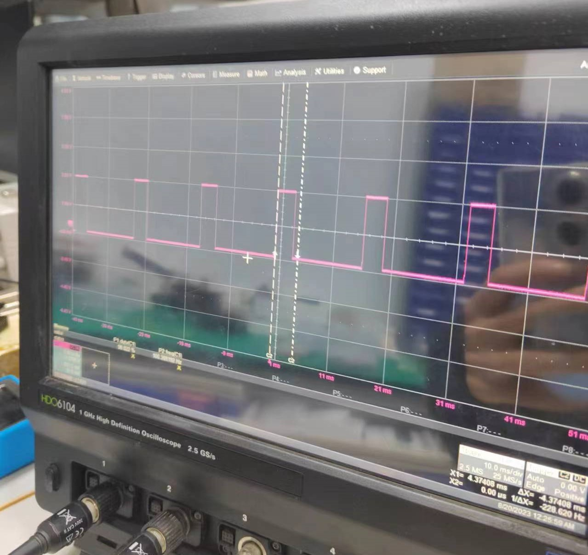三角波和正弦波发生如下
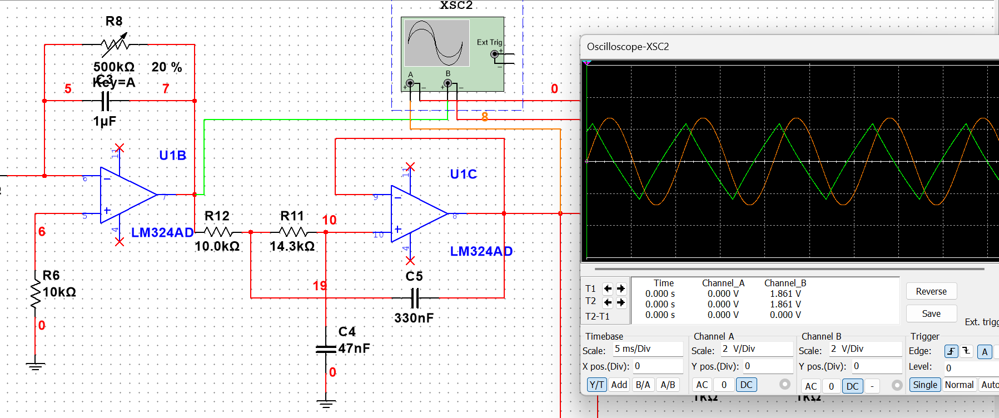
众所周知，方波经过积分之后就是三角波，而利用小学二年级学过的傅里叶变化对三角波分解可以得到三角波是由一系列的正弦波叠加而成的。基波的频率为题目要求的600rad也就是大概95.4Hz。由于只有奇数次谐波，所以我们在滤波保留基波时只能把下限截至频率选取在100~300Hz之间，考虑到留有一定裕量和元器件的误差，在计算的时候就先用的200Hz作为近似，再用现有的元器件参数去作近似，应该不会超出这个范围。
在积分的时候要在电容上方并联上一个大电阻，目的是为了在非理想运放存在输入失调电压和输入失调电流的时候提供一个直流通路，以至于不会使运放输出饱和，这是一个很现实的应用。
滤波电路采用了二阶的切比雪夫低通滤波器，能过获得在转折频率之外更加陡峭的滚降。如图可见该滤波器的直流增益为单位1，这是一种常用单位增益Sallen-Key的形式。
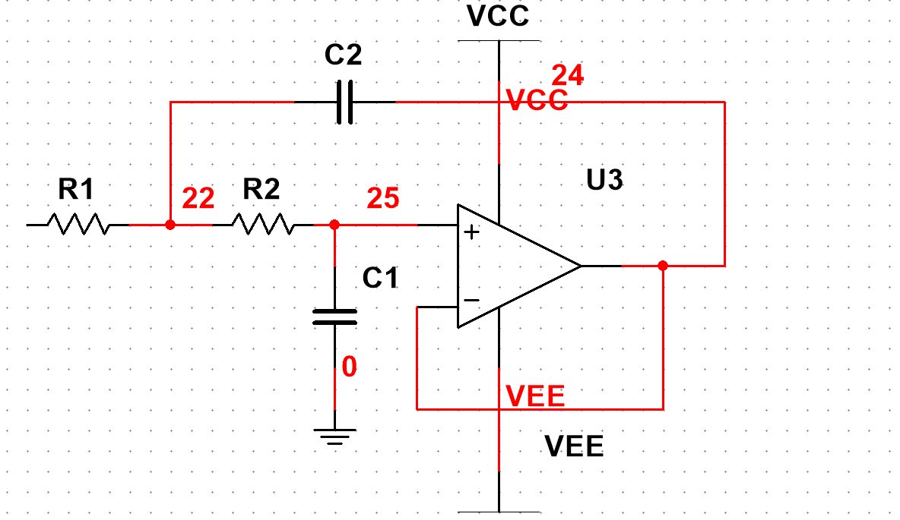 经过拉氏变换后s=j$\omega$,传递函数为
$$
A(s)=\frac{1}{1+\omega_CC_1(R_1+R_2)s+\omega_C^2R_1R_2C_1C_2s^2}\
$$
$$
a_1=\omega_CC_1(R_1+R_2)\
$$
$$
b_1=\omega_C^2R_1R_2C_1C_2
$$
计算可以得到
$$
R_1=\frac{a_1C_2-\sqrt{a_1^2C_1^2-4b_1C_1C_2}}{4\pi f_CC_1C_2} \
$$
$$
R_2=\frac{a_1C_2+\sqrt{a_1^2C_1^2-4b_1C_1C_2}}{4\pi f_CC_1C_2} \
$$
$$
C_2\geqslant C_1\frac{4b_1}{a_1^2}
$$
根据上述公式，选取截止频率和C1、C2，注意保证C1和C2的关系要保证满足最后一个$\geqslant$，然后再根据查表得来的a1和b1可以计算出R1和R2，最后只需要将元件按照上图所示连接即可，感兴趣的同学也可以自己推导传递函数和公式。
全通滤波器
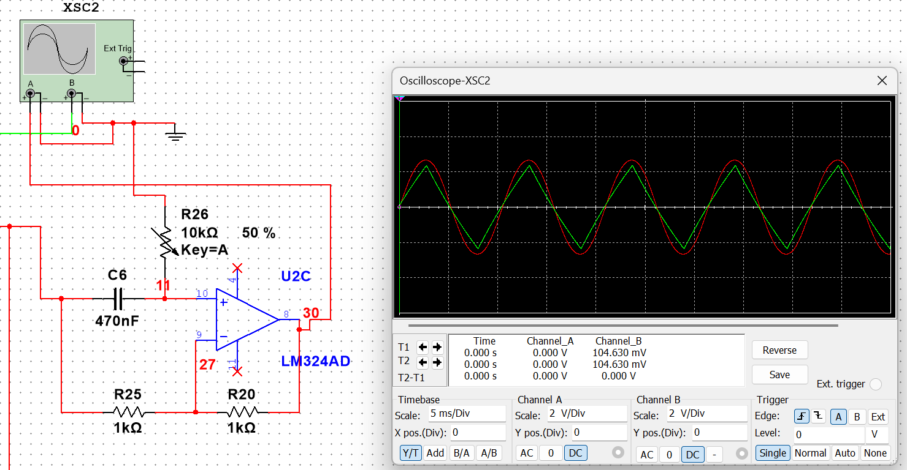
最后全通滤波器的部分比较简单，连好电路后转转滑动变阻器合适即可
- 信号运算处理部分
加法电路
根据原来的分析结果可以看出：加法器的作用是为了将输入信号与最后的结果相减，由提示信息可知外部输入信号$u_i$应该乘以一个系数$b_0=3\times10^4$,再和最后的输出结果$u_o$乘以一个系数$a_0=4\times10^4$相加，但是这么大的系数肯定不能直接乘，否则必然饱和。注意到上图中加法器输出后有一个 $\frac{1}{k_1k_2}$了吗？这个意思是可以将结果先衰减之后再进行运算，那么既然要衰减，为什么不直接不乘以这个系数呢:joy:？所以我的方法是将$4\times10^4$作为$k_1k_2$,放在之后的积分电路中作为因数慢慢乘进去。同时为了统一性，输入信号在进入加法器的时候应该先衰减$\frac{3}{4}$,这样之后乘以$4\times 10^4$就相当于乘了一个$3\times10^4$。
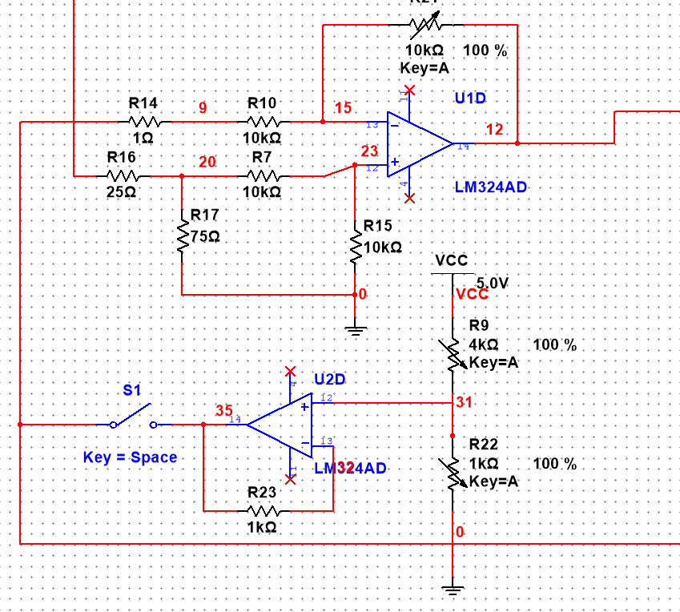加法器下面这一堆就是题目中所述的初始条件$u_0=1V$
积分电路
对于一个简单的一阶有源积分器来说，它的积分系数就是$\frac{1}{RC}$,由于要积两次，所以我每个积分器给了200的系数，这一环节没有什么难度，只是要注意积分的同时要提供直流通路即并上一个大电阻。
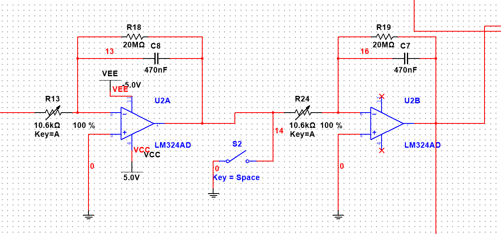
同样,开关S2作为题中要求的初始条件$\frac{du_o(0)}{dt}=0V/s$
仿真结果演示
不能保证我的结论一定正确，但是经过我仿真和实物焊接的过程中我发现这个结果的输出不是一个稳态，输出结果变化如下所示：
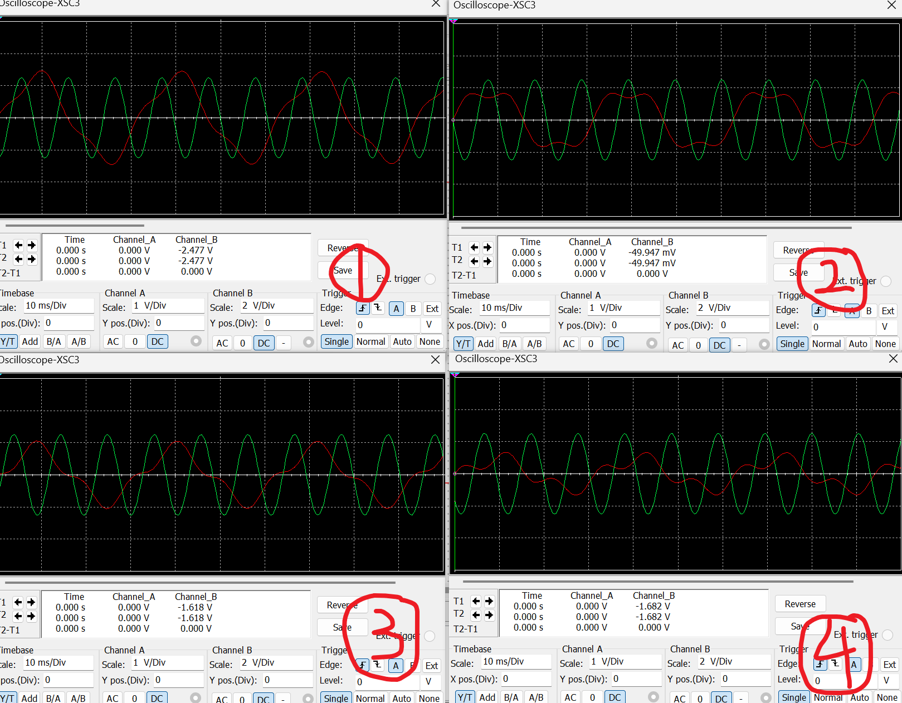最终波形变成了一个正弦波：
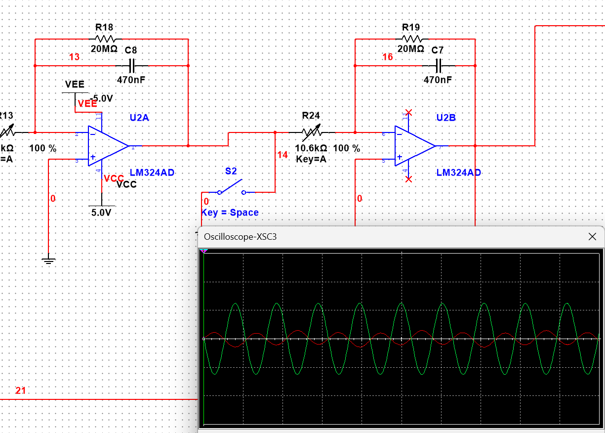
可以发现，最终这个波形的输出是一个变化的过程，变化快慢随着积分电路上并联电阻的大小变化，电阻越大变化越慢，我并联的20M欧电阻都能明显看见，如果只有几百千欧姆那变化就是一瞬间的事情。那么有同学就想问了：如果断路不就相当于电阻无穷大，这样不就是稳态了？这个对于仿真来说是成立的，可以试着把电阻给断路，结果还真的就是稳态，但是实物焊接中,由于有各种各样的现实因素，结果却不是这样，请往下看。
开始实物焊接
焊接电路板是个技术活，如何能够节省空间、减少跳线、以及最小化噪声的干扰等等。显然我做得都不好，将就着看看：
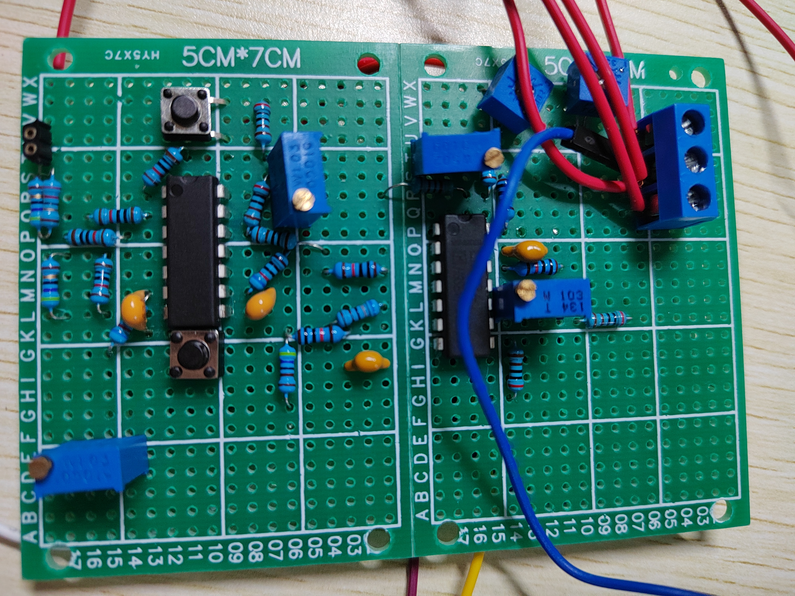运放是双电源供电所以用了两组5V的电源，蓝色的线是引出给示波器用的线，用了两个机械按键用来提供初始条件，还有一堆滑动变阻器。
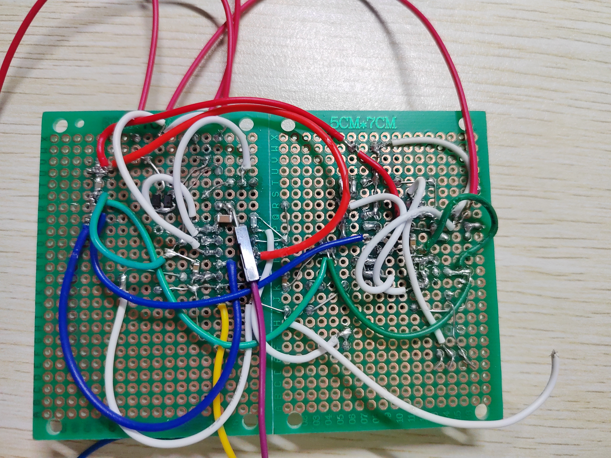反面更是狼狈不堪，用了很多跳线，导致在焊接的时候经常出现线断掉的情况，搞得人一惊一乍的。然后就是用了一些贴片元件，比如贴片电阻、贴片电容和贴片二极管（为了方便，实际测评的时候是没有的），看具体情况焊接上去耦电容，去掉噪声干扰，一般使用0.1uF的电容接在电源到地之间。
- 示波器观察波形
方波、正弦波、三角波波形发生如下
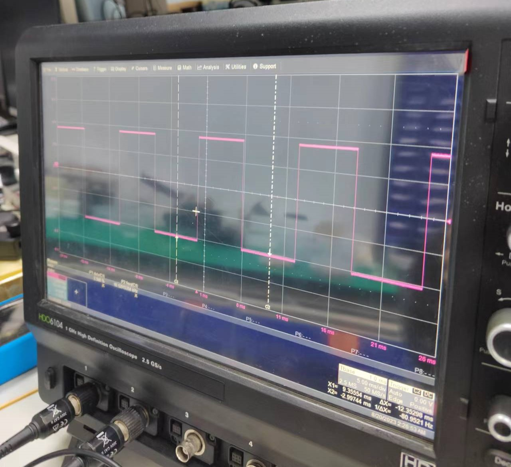 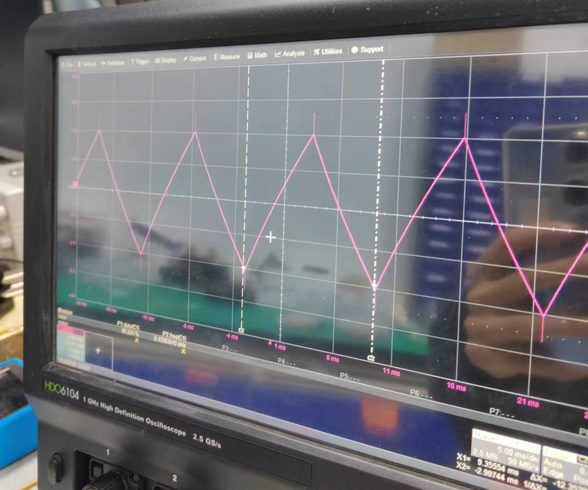 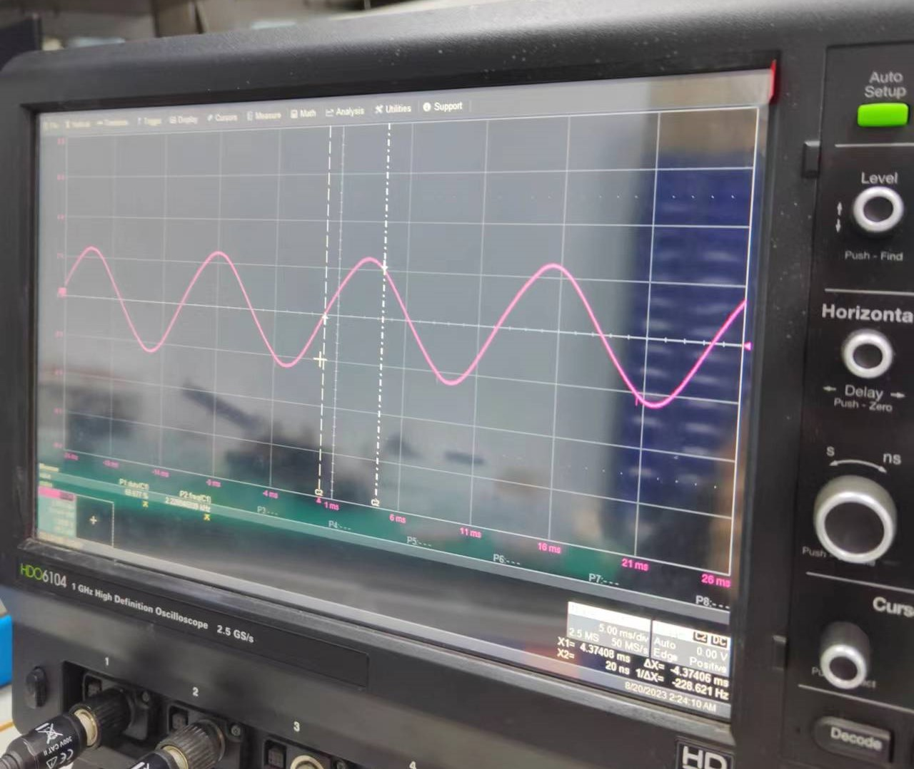当输入为正弦波时，输出结果如下：
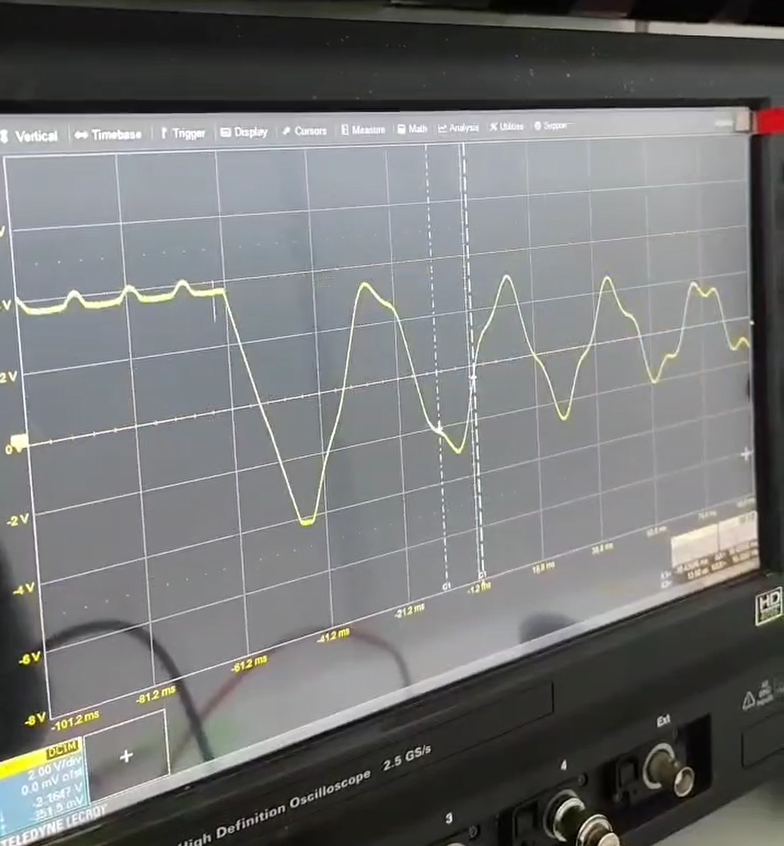由图可见当给出初始条件后，波形开始衰减，但是实物焊接出来波形衰减很快，大概在1秒钟后就衰减成了下图的正弦波
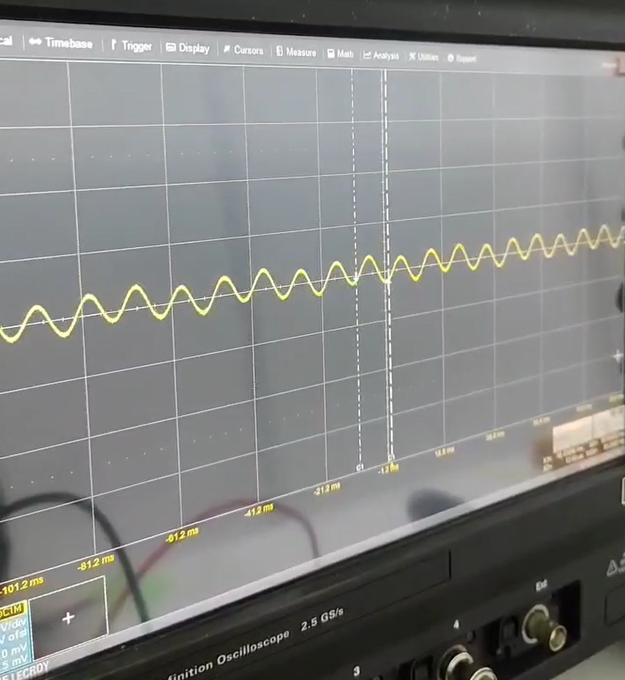我开始觉得十分奇怪，以为是电路搭错了，因为一开始我不清楚这个输出波形不是稳态（在仿真的时候积分器没有并联电阻，所以输出波形看上去没有变化），最后问了老师才知道原因所在。
但是无论我在积分电路的电容上并联多么大的电阻抑或是直接断路，这个输出波形衰减的速度依旧很快，至今还是没有找到原因，也不清楚电路实际连接出来到底是不是本来就衰减很快。
其余的情况分别是无输入和输入为三角波的情况。结果类似，忘记拍照记录了，但是依旧是衰减很快。
由于网上没有太多参考案例，关于这个结果也拿不准，欢迎讨论
写在最后：感谢能读到这里，希望没有浪费您宝贵的时间，如果觉得还不错，不要吝啬手中的赞呦~。
综合测评题目和电路仿真放在了sycamoremoon’s github,需要的同学可以自取。
之后还会有其他的内容上传，希望我的小小努力能够给大家带来帮助
这是我的网站，内容会随着时间逐渐丰富的..